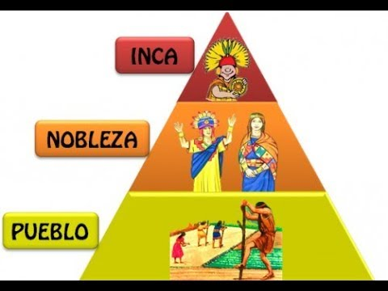

Organización social del tahuantinsuyo
El tahuantinsuyo fue un imperio prehispánico que se desarrolló en América del sur , específicamente en la región andina que hoy comprende Perú, Bolivia, Ecuador, Chile y Argentina. La organización social del tahuantinsuyo era compleja y se basaba en una estructura jerárquica.
La sociedad inca era jerárquica, distinguiéndose en ella grupos privilegiados y de personas comunes. Existían dos principios fundamentales: La recíprocidad y la redistribución. Estos , posibilitaron la colaboración en las distintas tareas y el intercambio de los productos obtenidos al interior de la comunidad y que todo aquello entregado a las autoridades imperiales fuera repartido entre las distintas comunidades, pudiendo así contar con recursos que no producían o que les fueran escasos. En el tahuantinsuyo existieron las siguientes clases sociales:

La nobleza
Nobleza de sangre:
Parientes del inca, se designaban las funciones altas el gobierno, clero y ejército.
Los nobles de sangre se les llamaba Orejones porque usaban unas enormes orejeras como símbolos de poder.
Nobleza de privilegio:
Habían ascendido del pueblo a la nobleza por destacar en el desempeño de sus funciones como , por ejemplo: las guerras también formaban la nobleza de privilegio los reyes y curacas sometidos.
Pueblo
Constituído por hombres comunes, conformado por los Hatun runas, Mitimaes, Yanaconas y Piñas. Estaba compuesto por la mayoria de la población, miembros de los pueblos aliados o sometidos, quienes se encargaban de realizar todos los trabajos necesarios para el mantenimiento de sus propios pueblos y familias y de la totalidad del imperio
a) Hatunrrunas:
Era la población campesina común del imperio incaico, la base de la mano de obra y la sociedad, dedicados a la agricultura, ganadería, pesca y artesanía. Su nombre significa "gente grande" o "gran pueblo" en quechua, y eran el grupo más numeroso dentro de la sociedad incaica.
b) Los Mitimaes
Los cuales se encargaban de colonizar nuevas tierras y enseñar las costumbres incas.
c) Los Yanaconas:
los sirvientes de la realeza y que , por lo general eran prisioneros.